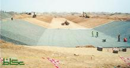

الجديد

أمانة جدة: تجاوزنا المخاطر ومشاريع درء السيول في موعدها
09/07/2011
دعا عدد من متضرري السيول والأمطار شرقي جدة، مسؤولي الأمانة والمجلس البلدي، إلى الاتزان والاعتدال في إعداد تقاريرهم الخاصة باجتماعاتهم الأسبوعية، التي تناقش سير العمل في المشاريع الخاصة بدرء مخاطر السيول والأمطار، التي وجهت القيادة بتنفيذها حالاً في عدد من أحياء شرقي المدينة. وأبدى عدد من الأهالي استغرابهم من اللغة الاستهلاكية التي تظهر بها بعض التقارير، رغم أن تنفيذ المشاريع يجري بمتابعة دقيقة من أمير المنطقة الذي أولاها أهمية بالغة، كفيلة بإنجاحها والانتهاء من تنفيذها خلال المدة المحددة، وليس هناك ما يدعو ــ على حد قولهم ــ أن يتولى آخرون التحليل والإشادة بالجهود، والأعمال ملموسة على أرض الواقع وليست في حاجة للاستهلاك الإعلامي، وهي تحظى باهتمام كبير من أمير المنطقة وفق رؤى وخطط مدروسة. ووزع المجلس البلدي أمس تقريراً صحافياً على عدد من وسائل الإعلام الورقية والإلكترونية، يشير إلى أنه يتضمن ما دار في لقاء لجنة درء مخاطر السيول والأمطار في المجلس مع مدير عام مشروعي تصريف مياه الأمطار والسيول في السامر وأم الخير في أمانة جدة المهندس عبدالمجيد البطاطي، ولم يحدد التقرير زمان ومكان الاجتماع المزعوم. واستهل المجلس التقرير بإعلان مدير عام مشروعي تصريف مياه الأمطار والسيول بالسامر وأم الخير المهندس عبدالمجيد البطاطي، تجاوز كل المخاطر التي واجهتهم خلال هدم المنازل والعمل وسط أماكن مأهولة بالسكان، وتوقع البطاطي أن يجري إنجاز المشروع في موعده قبل نهاية شهر فبراير المقبل، في ظل وجود أكثر الشركات كفاءة وقدرة على العمل لمدة 24 ساعة يومياً. ولفت التقرير إلى أن مدير عام المشروع ومدير عام الاستراتيجية في الأمانة أجاب على استفسارات المجلس البلدي، مؤكداً أنه تم بناء قاعدة معلومات عن المشروع في فترة قياسية، وقال: تسلمنا العروض في العاشر من مايو الماضي وطلبنا من جميع الشركات التي لا تستطيع العمل بكفاءة خلال 24 ساعة الانسحاب، وبالفعل اعتذرت 3 شركات عن التقدم للتنفيذ، لحساسية المشروعين والرغبة في إنجازهما في زمن قياسي، والحاجة إلى إعداد وتجهيز طاقات بشرية ومعدات ضخمة في وقت قصير، مع القدرة على العمل في مختلف المراحل بتواز. وشدد المهندس عبدالمجيد البطاطي ــ وفق ما جاء في التقرير ــ أن المشروع الذي يجري تنفيذه حالياً سيكون قادراً على استيعاب السيول، حيث تم تحديد المسار عن طريق هيئة المساحة الجيولوجية، ويتضمن تنفيذ مجرى السيل في السامر، ومجرى السيل وحوض التجميع في مخطط أم الخير، لافتا إلى أن حوض التجميع يستوعب أكثر من 2.3 مليون متر مكعب من المياه، ويتصل الحوض بقناة مفتوحة بطول 780 م وعرض أكثر من 30 مترا وعمق 3.5 م، تتصل هي الأخرى بالعبارة في غرب مخطط أم الخير. وأكد مدير المشروع أن المعدات تعمل ليل نهار وتم الانتهاء من هدم جميع المباني التي تقع في طريق السيل بمجمع أم الخير السكني، ويسير حجم الإنجاز بصورة أكبر مما توقعناه وبطريقة تبشر بالخير وتجعلنا نتوقع افتتاح المشروع في موعده. إلى ذلك قال نائب رئيس المجلس البلدي المهندس حسن الزهراني «مستوى الإنجاز الذي يجري حالياً في مشروع أم الخير والسامر يؤكد سياسة (تحريك القوى الكامنة)، ودليل واضح على أن لدينا كفاءات على درجة عالية من الفكر والحماس وإيجاد الحلول الخلاقة، وتحتاج إلى التشجيع والإمكانات حتى تفجر طاقتها وتقدم أفضل ما لديها، وما الإنجاز الكبير الذي شهدناه في المشروعين خلال شهرين فقط، إلا دليل على أن طريقة المعالجة غير التقليدية يمكن أن تنهي الكثير من المشاكل والقضايا العالقة في عروس البحر الأحمر. في المقابل اعتبر عضو المجلس البلدي بسام بن جميل أخضر، أن المشروع يمثل تحدياً كبيراً لمحافظة جدة لتفادي وقوع الكارثتين اللتين حدثتا في العامين الماضيين، وطالب بضرورة وجود (إدارة أزمات) في كل المشاريع التي تنفذها الأمانة، حتى يتم معالجة أي مشاكل طارئة بشكل سريع. تم نشره في جريدة عكاظ يوم السبت 1432/08/8 هـ - 2011/07/9 م